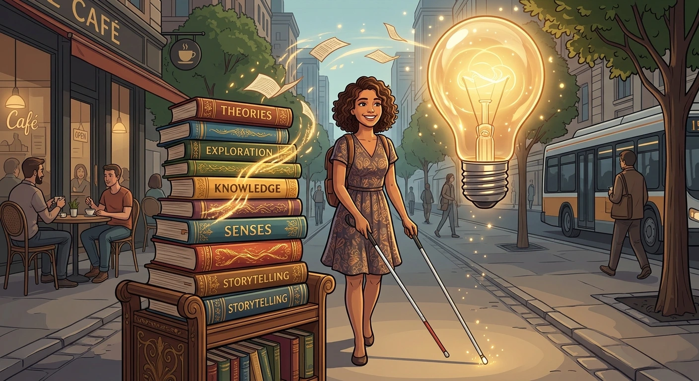
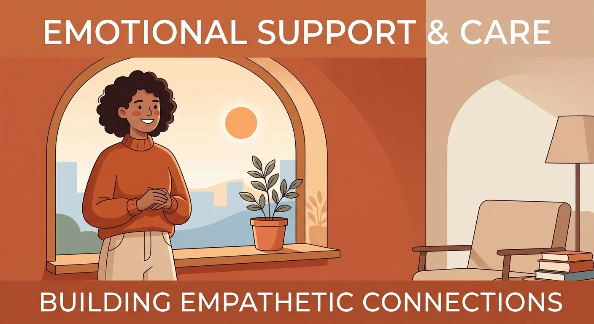

Understanding Violence
Violence has many faces. Naming it is the first step.
Abuse is not always visible. Knowing its forms helps women, families and professionals recognise it sooner.

Forms of violence
Six forms, one goal: control.
Physical abuse
Hitting, pushing, rough handling during care, or restraining someone against her will.
Emotional abuse
Humiliation, threats, constant criticism, or being told she is a burden.
Digital abuse
Monitoring her phone, messages or online accounts, or stopping her from using them.
Financial abuse
Taking benefits or wages, controlling spending, or forcing her to sign documents.
Neglect
Withholding food, hygiene, care or medical attention she depends on.
Disability-related abuse
Controlling mobility aids, medication, communication tools or personal assistance.
Warning signs
One sign is not proof. A pattern deserves attention.
In her daily life
- Is kept from friends, family or services
- Has no say over money, medication or aids
- Is rarely left alone to speak for herself
In her wellbeing
- Seems anxious around a carer or partner
- Has unexplained injuries or missed appointments
- Loses confidence or stops doing things she enjoyed
What it can look like
Illustrative scenarios, not real cases.

-
1
The missing wheelchair
A woman's partner hides her wheelchair when she wants to see friends, so she stays home.
-
2
The silent appointment
A deaf woman is never given an interpreter; a relative speaks for her and decides what she is told.
-
3
The controlled benefits
A carer manages a woman's money and gives her only small amounts, saying she cannot cope.